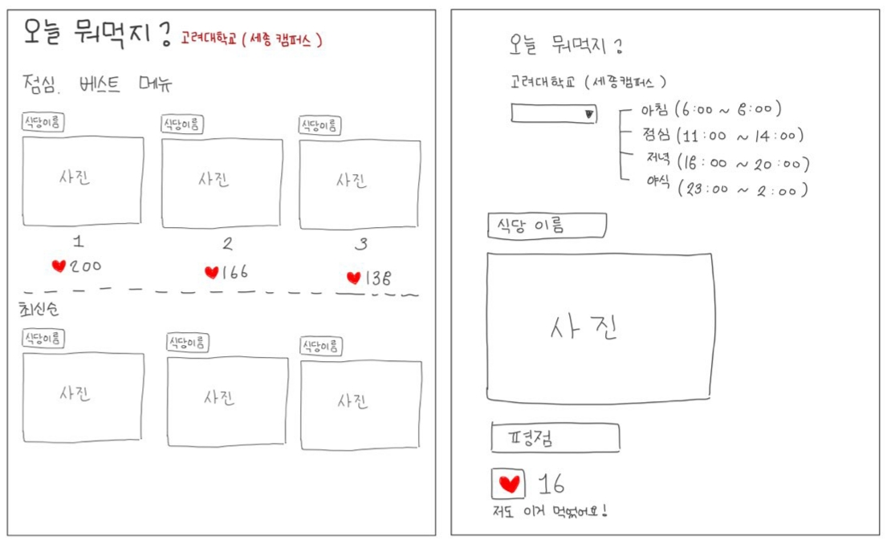

Home
제가 만들고 싶은 웹페이지를 소개합니다!
오늘 뭐먹지?

학교 캠퍼스 사람들끼리 아침, 점심, 저녁, 야식이 있는 리스트에서 시간 마다 먹은 메뉴를 공유하는 웹사이트
매일 어떤 음식을 가장 많이 먹었는지 좋아요를 통해 통계를 내서 맨 위에 TOP3까지 알려주기 때문에 어떤 날에 어떤 메뉴가 인기가 가장 많았는지 알 수 있다.
무엇을 먹을지 선택에 어려움을 겪는 사람들의 메뉴 선택에 도움을 주는 웹페이지